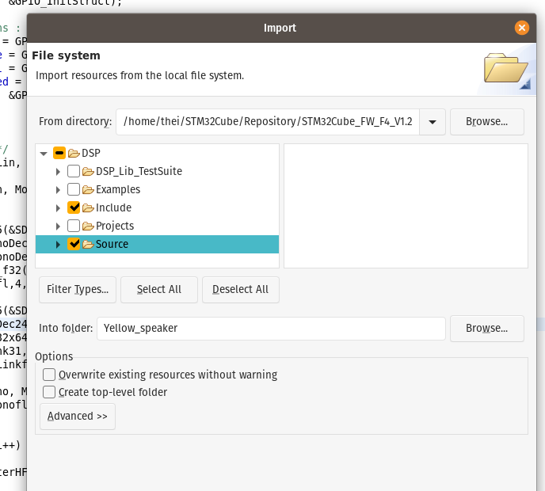

Let me write a round up of this research on using a MCU as a speaker processor.
By this time I switched from KEILmdk to STM32CubeIDE which at this moment (november, 2021) seems to be the weapon of choice for most STM developers.
Again for future reference a quick how to on how to include a math / DSP library.


Together with your installation of the IDE you also will have installed some repositories for ARM software products. You are looking for CMSIS/DSP libraries. The path will be something like /STM32Cube/Repository/STM32Cube_FW_F4_V1.25.2/Drivers/CMSIS/DSP/ in your home directory (in Linux). It will be similar in MacOS or Windooz.
Start a new project in the IDE, right click on projects name and Create new source folder. Name this folder DSP. Now again right click and select Import file system. Select both the source (source) and the header (include) file as in the screenshot from the above mentioned 'repository'. Click finish.

Now you will have both the source and header files in your project but your compiler knows nothing about it so: right click project and find the project properties setup. Find the compilers include path settings and add the new path to your include file. Check the screenshot.
Now you can include all these nice ARM DSP tricks by:#include "arm_math.h" Try to build (that's embedded speak for compile)... Hundreds of errors, but if you check the firsts you will see that the compiler needs two PreProcessor directives. Find those in properties and add both: ARM_MATH_CM4 (we are using a M4 core) and __FPU_PRESENT = 1U (yes, we do have a floating point dohickey in our processor). O, and that's two/2 underscores! __
Now you can start programming your code making use of block processing, taking chunks of say 48 samples using the increased efficiency of the CMSIS libraries.
Check all those filtering functions!!
There's loads to discover but let me disclose this one:
Decades ago I met Ed Long (yup, the guy who 'invented' Time-alignment) at a proaudio trades fair. He demonstrated his closed box, single 15' sub. That was astounding (as was the excursion). His trick was to use electronics branded as ELF and not filters to EQ the sub.

Much later Linkwitz developed a filtering method known as Linkwitz Transform. A similar way to correct the response of a sub woofer.
Never got any good results with this method as in professional DSP's don't provide for a method to import your own Biquad coefficients. And using shelving filters and EQ will never have the required precision.
While using this CMSIS library function:
| void | arm_biquad_cas_df1_32x64_q31 (const arm_biquad_cas_df1_32x64_ins_q31 *S, const q31_t *pSrc, q31_t *pDst, uint32_t blockSize) |
| Processing function for the Q31 Biquad cascade 32x64 filter. |
I managed to reproduce that sensation I had at that trade fair decades ago..Thanks Ed!
Do understand that you really, really need the above precision (in fixed point) to get any decent results! If you are into the math: understand how a biquad calculation works and how the representation of coefficients (which are all close to the unity circle) will effect the calculations at very low frequencies.
(anyone remember we at some point (2010?) got this 'use for better LF response' check box in LondonArchitect? )
----->
Oh, and this is the latest board I developed, everything being stalled a bit by the global chip shortage: